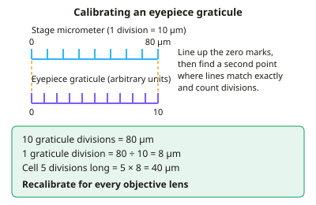

A-level Biology Year 12 · Topic 6
Required and core practicals
This topic brings together the required and core practicals. Practical skills are tested in written exams as well as in the lab, so knowing the methods really pays off.
We will prepare slides and calibrate a graticule, observe mitosis, test membrane permeability with beetroot, and find the water potential of plant tissue.
We also cover dissection, transpiration and stomatal density, Daphnia heart rate, and safe aseptic technique for testing antimicrobials.
- 8 subtopics
- 397 questions
- Free: 6.1 notes and 10 questions
In this topic
- 6.1Practical: preparing temporary slides, using a light microscope and calibrating an eyepiece graticuleFree below · 61 questions
- 6.2Practical: root tip squash, observing mitosis and calculating mitotic indexOpen in Full Marks · 69 questions
- 6.3Practical: effect of temperature or solvent on cell membrane permeability (beetroot)Open in Full Marks · 53 questions
- 6.4Practical: dilution series and calibration curve to determine water potential of plant tissueOpen in Full Marks · 21 questions
- 6.5Practical: dissection of a gas exchange or mass transport system (fish gills, insect trachea, lungs, heart, plant stem)Open in Full Marks · 51 questions
- 6.6Practical: transpiration with a potometer and stomatal densityOpen in Full Marks · 25 questions
- 6.7Practical: effect of a named variable (e.g. caffeine, temperature) on Daphnia heart rateOpen in Full Marks · 75 questions
- 6.8Practical: aseptic technique and the effect of antimicrobial substances on microbial growthOpen in Full Marks · 42 questions
6.1 · Free notes
Practical: preparing temporary slides, using a light microscope and calibrating an eyepiece graticule

Key points
- A temporary mount (wet mount) is a very thin piece of tissue, e.g. onion epidermis peeled with forceps, placed on a slide in a drop of water or stain so that light can pass through it.
- Lower the coverslip at an angle using a mounted needle to avoid trapping air bubbles. Blot away excess liquid with filter paper.
- Stains increase contrast because most cell structures are colourless. Iodine in potassium iodide stains starch blue-black and also shows nuclei. Methylene blue and eosin stain other structures.
- Focusing: start on the lowest-power objective (×4), use the coarse focus first, then the fine focus. On higher powers use only the fine focus, so the lens does not crack the slide.
- Total magnification = eyepiece magnification × objective magnification, e.g. ×10 × ×40 = ×400.
- Magnification = image size ÷ actual size (I = A × M). Convert both to the same unit first: 1 mm = 1000 µm and 1 µm = 1000 nm.
- Resolution is the minimum distance at which two points can be seen as separate. For a light microscope it is limited by the wavelength of light to about 0.2 µm (200 nm). Higher magnification alone does not improve it.
- An eyepiece graticule is a ruler in the eyepiece with arbitrary units. It must be calibrated against a stage micrometer, a slide with a known scale, usually 10 µm divisions.
- To calibrate, line up the zero marks, then find a second place where the scales match exactly. 1 graticule division = length on stage micrometer (µm) ÷ number of graticule divisions.
- Recalibrate for each objective lens. The graticule stays the same size but the image is magnified differently, so the value of one division changes. Measure by counting divisions × calibration value.
- Biological drawings need sharp continuous lines, no shading, a title, the magnification or scale, and labels using ruled lines that do not cross.
In more detail
- Worked calibration: 100 µm on the stage micrometer lines up with 25 eyepiece units at ×400, so 1 unit = 4 µm. A cell 18 units long is 72 µm.
- Stains: iodine for starch and plant cells; methylene blue for animal cells and nuclei; eosin for cytoplasm; toluidine blue for lignin and general tissue.
- Drawing rules: draw only what you see, use clear single lines, label lines with a ruler that do not cross, and no arrowheads.
- Why recalibrate: at higher power each eyepiece unit covers a smaller real distance, so a value calibrated at ×100 is wrong at ×400.
Practice
Practical: preparing temporary slides, using a light microscope and calibrating an eyepiece graticule: 10 questions
Pick an answer to check it, or open the answer for the explanation.
1. A student lowers a coverslip onto a drop of water at an angle using a mounted needle. What is the main reason for doing this?
- To stain the specimen evenly
- To avoid trapping air bubbles over the specimen
- To stop the cells moving
- To increase the magnification
Show answer
B: To avoid trapping air bubbles over the specimen. Lowering the coverslip slowly at an angle pushes air out ahead of it. Trapped air bubbles obscure the specimen and can be mistaken for cells.
2. A microscope has a ×10 eyepiece lens and a ×40 objective lens. What is the total magnification?
- ×50
- ×400
- ×4
- ×4000
Show answer
B: ×400. Total magnification = eyepiece × objective = 10 × 40 = ×400.
3. Which statement about magnification and resolution is correct?
- The resolution of a light microscope is about 0.2 mm
- Increasing magnification always increases resolution
- Resolution is how many times larger the image is than the specimen
- Resolution is the smallest distance at which two points are seen as separate
Show answer
D: Resolution is the smallest distance at which two points are seen as separate. Resolution is the ability to distinguish two close points as separate. Magnification only enlarges the image. Light microscope resolution is about 0.2 µm, not 0.2 mm.
4. When calibrating, 40 eyepiece graticule divisions line up exactly with 0.4 mm on the stage micrometer. What is the length of one graticule division?
- 1 µm
- 100 µm
- 16 µm
- 10 µm
Show answer
D: 10 µm. 0.4 mm = 400 µm. 400 µm ÷ 40 divisions = 10 µm per graticule division.
5. At a total magnification of ×100, one graticule division equals 20 µm. What does it equal at ×400?
- 10 µm
- 20 µm
- 5 µm
- 80 µm
Show answer
C: 5 µm. The image is 4 times larger at ×400 but the graticule is unchanged, so one division covers 4 times less of the specimen: 20 ÷ 4 = 5 µm.
6. A cell measures 15 graticule divisions in length. One division is 2.4 µm. What is the length of the cell?
- 360 µm
- 6.25 µm
- 17.4 µm
- 36 µm
Show answer
D: 36 µm. Length = number of divisions × calibration value = 15 × 2.4 µm = 36 µm.
7. A drawing of a cell is 54 mm long. The actual cell is 36 µm long. What is the magnification of the drawing?
- ×1.5
- ×150
- ×1500
- ×15 000
Show answer
C: ×1500. Convert to the same units: 54 mm = 54 000 µm. Magnification = 54 000 ÷ 36 = ×1500.
8. Why should only the fine focus be used when viewing with a high-power objective lens?
- It rotates the nosepiece
- The lens could hit and crack the slide
- It reduces the resolution of the lens
- It overheats the lamp
Show answer
B: The lens could hit and crack the slide. High-power objectives sit very close to the slide. Large coarse-focus movements can push the lens into the slide or coverslip and damage both.
9. Why must the eyepiece graticule be recalibrated when the objective lens is changed?
- The graticule stays the same size but the image is magnified by a different amount
- The stage micrometer changes length
- The eyepiece lens is replaced
- The light intensity alters the scale
Show answer
A: The graticule stays the same size but the image is magnified by a different amount. The graticule is fixed in the eyepiece, but the specimen's image size changes with the objective. So the real length of one division changes.
10. Which is a feature of a good biological drawing made from a microscope slide?
- Shading to show darker structures
- Every cell in the field of view drawn
- Sharp, continuous lines with no shading
- Label lines that cross to avoid clutter
Show answer
C: Sharp, continuous lines with no shading. Examiners expect clear, continuous single lines with no shading or sketching. Labels use ruled lines that do not cross, and a title and magnification are included.
Keep going in Full Marks
Full Marks has 61 questions on Practical: preparing temporary slides, using a light microscope and calibrating an eyepiece graticule (51 more than here), set out in practice levels. You also get notes and 3D models for all 8 subtopics of Required and core practicals, plus games, timed exams and past papers.
On your exam board
- AQATopic 2: Cells, Topic 3: Organisms exchange substances with their environment, Topic 4: Genetic information, variation and relationships between organisms
- OCR ATopic 2.1.1: Cell structure, Topic 2.1.5: Biological membranes, Topic 2.1.6: Cell division, cell diversity and cellular organisation, Topic 3.1.1: Exchange surfaces, Topic 3.1.3: Transport in plants, Topic 4.1.1: Communicable diseases, disease prevention and the immune system
- OCR BTopic 2.1: Cells and microscopy, Topic 2.3: Transport and gas exchange, Topic 3.1: Cell division, Topic 3.3: Disease and the immune system
- EdexcelTopic 2: Cells, viruses and reproduction of living things, Topic 4: Exchange and transport
- CambridgeTopic 1: Cell structure, Topic 4: Cell membranes and transport, Topic 5: The mitotic cell cycle, Topic 7: Transport in plants, Topic 8: Transport in mammals, Topic 10: Infectious diseases